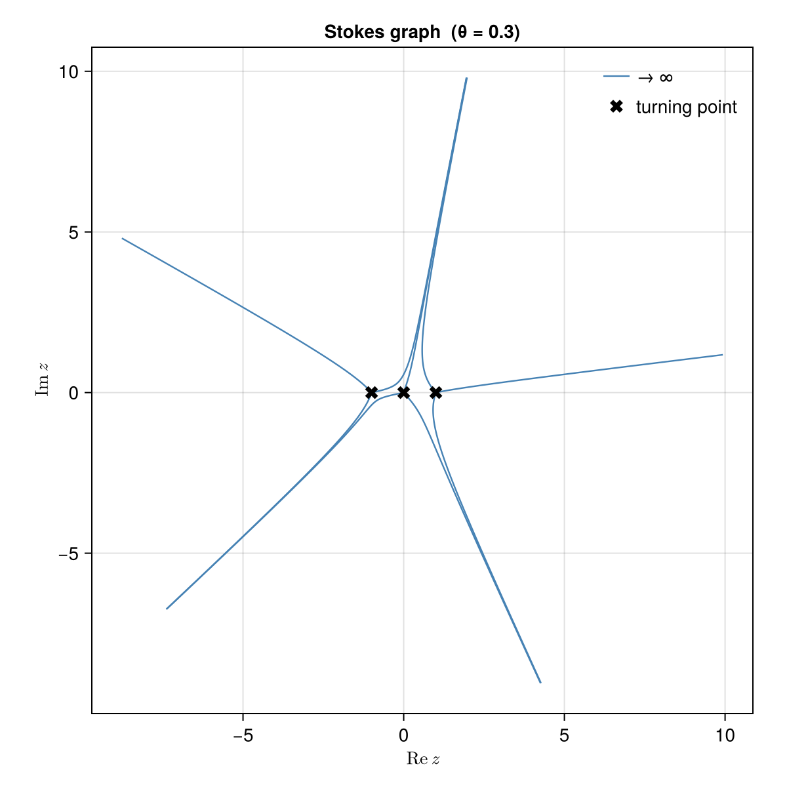
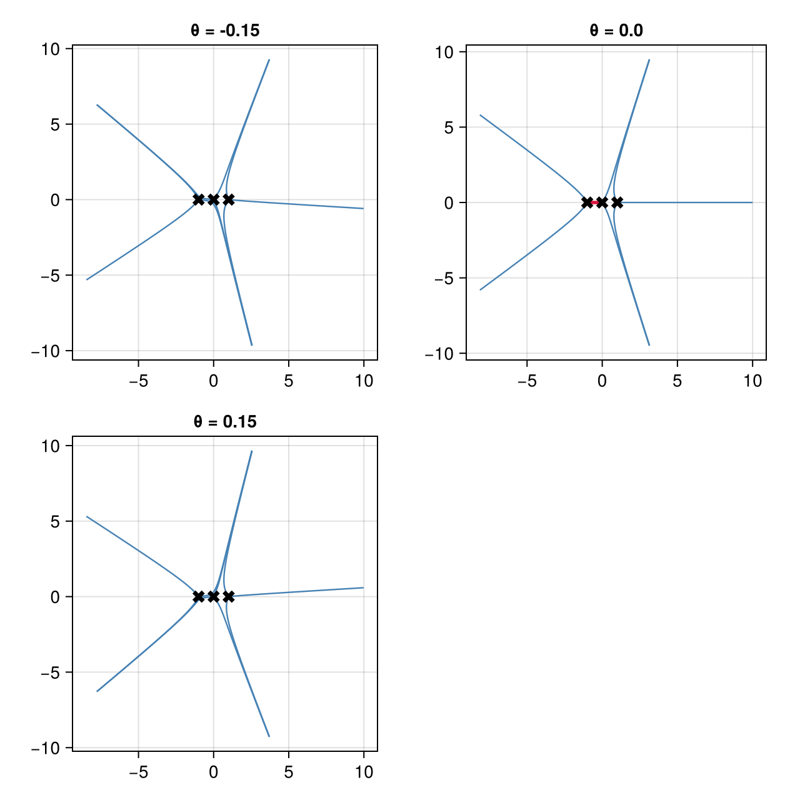
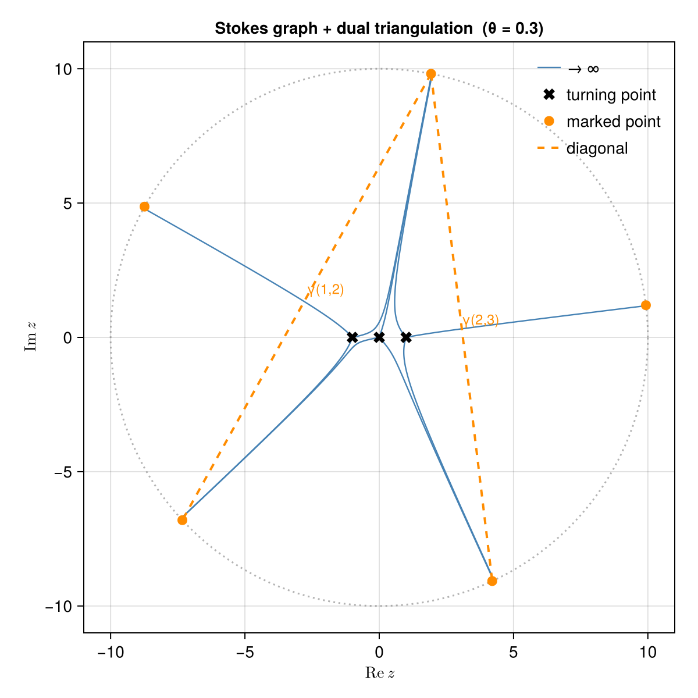
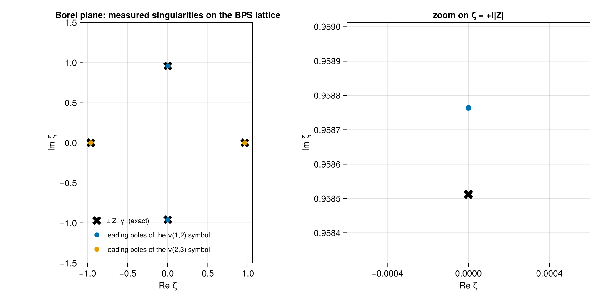
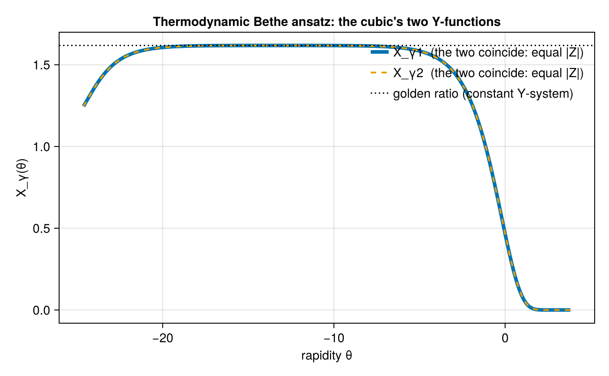

The cubic, end to end
The research problem
Write down a differential equation with a small parameter,
\[\hbar^2\psi''(z) = Q(z)\,\psi(z),\]
and solve it the obvious way: expand in $\hbar$. The expansion is the Wentzel-Kramers-Brillouin approximation, it is a century old, it is in every quantum mechanics textbook - and it does not converge. For any $\hbar \neq 0$ its coefficients grow factorially and the series has zero radius of convergence. Truncating it at the smallest term gives a few digits and then a wall.
So a natural question:
What is the divergence hiding, and can we recover the exact answer from it?
The modern answer is yes, and the divergence is not noise - it is data. Where the series diverges tells you about objects that no order of the expansion can see, and the whole structure is rigid enough that a discrete, exactly computable combinatorial object controls it. That is the subject of exact Wentzel-Kramers-Brillouin analysis, and the surprise is which combinatorial object shows up: a cluster algebra, the same structure that appears in triangulations of surfaces and in canonical bases in Lie theory.
This tutorial follows one small example - the cubic oscillator $Q(z) = z^3 - z$ - through the entire chain, and checks each link:
potential → turning points → divergent series → Borel plane
→ Stokes graph → saddle connections → triangulation → quiver
→ charge lattice → BPS spectrum → wall-crossing → integral equationsThe example is deliberately the smallest one in which every step does something non-trivial, and small enough that most answers can be checked by hand. Everything below is real output.
The two threads
Two independent theories meet in this computation, and it is worth naming them before starting, because the package is organized around the split.
Resurgence is the continuous side: what to do with a divergent series. Its basic tool is the Borel transform, which divides the $n$-th coefficient by $n!$ and so turns a divergent series into a convergent one; the singularities of the resulting function encode everything the original series knew about exponentially small effects, and integrating it back recovers an actual number. That machinery is Resurgence.jl, which knows nothing about differential equations.
Cluster algebras are the discrete side: a set of variables generated from a quiver by a combinatorial rule called mutation, with a striking positivity and finiteness structure. That is ClusterAlgebras.jl, which knows nothing about analysis.
This package is the bridge. The dictionary between the two - due to Iwaki and Nakanishi - is what the second half of the tutorial computes and verifies: the jump of a resummed series across a Stokes ray is a cluster mutation, and the spectrum of the differential equation is a maximal green sequence of a quiver.
Step 1: the problem and its turning points
Coefficients are given in ascending order, so $V(z) = -z + z^3$ and $E = 0$:
julia> using ExactWKB
julia> import Resurgence, ClusterAlgebras
julia> prob = SchrodingerProblem([0.0, -1.0, 0.0, 1.0])
SchrodingerProblem (ħ²ψ″ = Q ψ, Q = V − E)
Q(z) = -1.0*z + 1.0*z^3
E = 0.0
julia> degree(prob), prob(2.0)
(3, 6.0)The zeros of $Q$ are the turning points, where the classical momentum vanishes and the expansion below breaks down. Here they are the three cube roots, all simple:
julia> tps = turning_points(prob)
3-element Vector{TurningPoint{Float64}}:
TurningPoint(-1.0 + 0.0im, simple)
TurningPoint(0.0 + 0.0im, simple)
TurningPoint(1.0 - 0.0im, simple)Simplicity matters: several later steps require it and refuse to proceed otherwise, rather than returning something that looks like an answer. (See The double well for a case where they collide.)
Step 2: the divergent series
The substitution $\psi = \exp(\hbar^{-1}\!\int S\,dz)$ turns the equation into the Riccati equation $S^2 + \hbar S' = \hbar^{-2}Q$, solved order by order from $S_{-1} = \sqrt{Q}$. wkb_expansion runs that recursion:
julia> w = wkb_expansion(prob; order = 8)
WKBExpansion - all-orders WKB (Riccati) solution
order : 8 (S₋₁ … S₈)
arithmetic : bigfloat
potential : SchrodingerProblem(Q deg 3, E = 0.0)Two implementation notes. Every term of the recursion is exactly of the form $p_m(z)\,\sqrt{Q}^{\,\varepsilon}/Q^{k}$, so the package stores the triple $(p_m, k, \varepsilon)$ rather than working in a field of rational functions - which keeps the coefficient arithmetic clean. And arithmetic : bigfloat reports that the recursion is running in extended precision: exact Rational input would stay exact instead.
Only the odd part of $S$ matters, because $S_{\text{even}} = -\tfrac12\partial\log S_{\text{odd}}$ is a total derivative and integrates to zero around a closed cycle. The package never uses that identity to compute - it checks it:
julia> even_odd_residual(w)
6.450861179630544109279055448850406242674120469918688714061254398954872680336836e-73Now integrate around a cycle enclosing two turning points. The result is a quantum period, or Voros symbol, with the leading classical term kept separate:
julia> vs = voros_symbol(w, encircling_contour(tps[1], tps[2]))
VorosSymbol - quantum period ∮ S dz
classical v₋₁ = 0.95851 - 4.9613e-16im
quantum series: FormalSeries{ComplexF64}: -0.3277571942865149 + 4.0592529337857286e-16im*ħ + 0.756794046706105 + 2.913225216616411e-13im*ħ^3 - 9.948605980078156 - 8.202505341614597e-11im*ħ^5 + 322.4783792315138 + 4.863832145929337e-7im*ħ^7 + O(ħ^9)
julia> classical_period(vs)
0.958512187788474 - 4.961309141293668e-16imTwo things to notice. The imaginary part is $10^{-16}$: the period of this cycle is real, and nothing told the quadrature so. Contours are integrated with $\sqrt{Q}$ tracked continuously from vertex to vertex, never chosen by a branch convention, and this is that machinery coming out right. Second, the coefficients grow: $-0.33$, $0.76$, $-9.9$, $322$. That is the factorial divergence the tutorial set out to exploit.
Step 3: what the divergence knows
Hand the series to Resurgence.jl and ask where its Borel transform is singular. Since the series is truncated we approximate the Borel function by a rational function (Padé) and look at its poles:
julia> P = Resurgence.pade(Resurgence.borel(quantum_series(vs)); reduce = true);
julia> round.(ComplexF64.(Resurgence.poles(P)); sigdigits = 6)
2-element Vector{ComplexF64}:
-7.21537e-10 - 0.962036im
7.21537e-10 + 0.962036imFour coefficients of a divergent series, and the answer is a conjugate pair at $\pm 0.962\,i$. Keep that number. It will turn out to be the central charge of a state we have not computed yet - a state that this cycle knows about only through how badly its expansion diverges.
Step 4: the Stokes graph
The geometry that organizes all of this is the Stokes graph: the curves emanating from each turning point along which $\mathrm{Im}\bigl(e^{-i\theta}\int\sqrt{Q}\bigr)$ stays constant. They divide the plane into regions in which one solution dominates the other, and the angle $\theta$ is the direction in which the Borel integral is taken.
julia> g = stokes_graph(prob; theta = 0.3)
StokesGraph at θ = 0.3
turning points : 3
Stokes lines : 9 (9 to ∞, 0 saddle-traced)
saddle edges : none
signature : (3, 9, Tuple{Int64, Int64}[])
Three turning points, three lines from each, all nine escaping to infinity. Tracing them is the one genuinely delicate numerical step in the package, because $\sqrt{Q}$ has branch points exactly at the turning points where the lines start. The trick is to make the square root a dynamical variable: trace the pair $(z, w)$ with $w = \sqrt{Q}$ obeying its own equation, so the branch is transported by the integrator and no discrete sign is ever chosen.
A graph in which no line runs from one turning point into another is called generic, and this one is. At special angles that fails - a line connects two turning points, and the topology of the graph jumps. Those are the Stokes phenomenon angles, and saddles finds them by bisection:
julia> saddles(prob)
2-element Vector{Saddle{Float64}}:
Saddle(1–2, |Z| = 0.95851, θ_c = 0.0)
Saddle(2–3, |Z| = 0.95851, θ_c = 1.5708)Two saddle connections, equal masses, at $\theta = 0$ and $\theta = \pi/2$. In the physics reading of this problem these are its BPS states - stable particles, with $|Z|$ the mass and $\theta_c$ the phase of the central charge. They were found by tracing an ordinary differential equation. The rest of the tutorial obtains the same list two more times, by completely different routes.
Notice already: the mass $0.9585$ is the modulus of the pole location $0.962$ from Step 3, to within half a percent. The series diverges because of the other cycle.
Watching the topology change is the clearest picture of the Stokes phenomenon. Here is the graph just below, at, and just above $\theta = 0$:

The middle panel has the saddle connection; on either side it has resolved, but differently - the two outer panels are not related by a small deformation. Everything below is a way of saying precisely what changed.
Step 5: from a graph to a quiver
Here the discrete side takes over. A generic Stokes graph of a degree-$d$ polynomial is dual to an ideal triangulation of a polygon with $d+2$ marked points: each turning point becomes a triangle, each region of the graph a vertex of the polygon. For the cubic that is a pentagon.
julia> t = ideal_triangulation(g)
IdealTriangulation of the 5-gon (dual Stokes regions)
triangles : 3 (one per turning point)
diagonals : γ(1, 2) ↔ (2, 4), γ(2, 3) ↔ (2, 5)
The conversion is a planar face walk that asserts every genericity invariant as it goes; a graph with a saddle connection is rejected with a typed error rather than triangulated incorrectly.
A triangulated polygon has a quiver: one vertex per diagonal, arrows from the oriented triangles.
julia> q = triangulation_quiver(t)
Quiver with 2 vertices (2 mutable, 0 frozen)
Exchange matrix B:
0 -1 (γ(1,2))
1 0 (γ(2,3))
julia> ClusterAlgebras.cartan_type(q)
(:A, 2)The pentagon with two diagonals is the $A_2$ cluster algebra - the smallest interesting one, whose defining feature is that mutating a diagonal five times returns you to the start (the pentagon recurrence). We arrived at it from a differential equation.
Step 6: attaching numbers to the combinatorics
The two sides now have to be matched. charge_basis builds a cycle per diagonal, integrates $\sqrt{Q}$ around it to get a central charge, and counts crossings to get the intersection pairing:
julia> cb = charge_basis(prob, t; margin = 0.4)
ChargeBasis - signed frame on the triangulation diagonals
γ(1, 2) : ε = +1, Z = -0.95851 + 2.55e-16im
γ(2, 3) : ε = −1, Z = 4.3368e-16 + 0.95851im (decay rep. -4.3368e-16 - 0.95851im)
signed pairing = [0 1; -1 0]The $\varepsilon$ deserve a word, because they were the subtlest part of the implementation. Orienting a cycle by requiring its Voros symbol to decay fixes a representative of $\pm\gamma$, not the physical charge itself; the sign relating the two is recovered by inverting the identity
\[P_{ij} = -\,\varepsilon_i \varepsilon_j B_{ij},\]
which ties the numerically computed pairing $P$ to the combinatorially computed quiver $B$. This is the tightest joint in the bridge - a quadrature on one side, a face walk on the other - and the package enforces it exactly rather than up to sign:
julia> signed_pairing(cb) == -q.B
true
julia> signs(cb)
2-element Vector{Int64}:
1
-1Step 7: the spectrum as a green sequence
Rotating $\theta$ sweeps across the walls one at a time. Collecting the charges in the order their walls are crossed gives the spectrum:
julia> sp = bps_spectrum(prob; theta = 0.3, margin = 0.4)
BPSSpectrum - 2 BPS states (chamber θ₀ = 0.3, θ-decreasing)
[1, 0] |Z| = 0.95851 θ_c = 0.0 Ω = 1
[0, 1] |Z| = 0.95851 θ_c = 1.5708 Ω = 1
julia> sp.sequence
2-element Vector{Int64}:
1
2The masses and angles are those of the traced saddles - which the constructor checks internally, rather than assuming. But the charges are something new: they are $c$-vectors, and the sequence is a maximal green sequence of the quiver, a purely combinatorial notion that ClusterAlgebras.jl computes with no knowledge of this differential equation:
julia> ClusterAlgebras.maximal_green_sequences(ClusterAlgebras.extend(ClusterAlgebras.Seed(q)))
2-element Vector{Vector{Int64}}:
[2, 1]
[1, 2]
julia> ClusterAlgebras.y_system(bridge_seed(cb)).period
5[1, 2] is one of the two, and the period of the associated $Y$-system is 5 - the pentagon again, in the guise of Zamolodchikov periodicity. Two counts of the same object: the stable particles of a differential equation, and the green sequences of a quiver.
Step 8: wall-crossing, where the two threads meet
Now use the structure. Summing a divergent series requires choosing a direction in the Borel plane. When that direction hits a singularity, the two sides give different answers - and the difference is prescribed. The Delabaere-Dillinger-Pham formula says that across the ray of a state $\gamma'$,
\[s_+(V_\gamma) = s_-(V_\gamma)\,\bigl(1 + V_{\gamma'}\bigr)^{\langle\gamma,\gamma'\rangle},\]
with the exponent the intersection number of the two cycles - an integer. The exponent is therefore something we can measure and compare against combinatorics.
julia> εc = signs(cb);
julia> vs = [voros_symbol(w, εc[j] == 1 ? c : reverse(c)) for (j, c) in enumerate(cb.contours)];
julia> κ = signed_pairing(cb)[2, 1]
-1
julia> Zwall = abs(physical_charges(cb)[1])
0.9585121877884738
julia> for x in (4.0, 6.0, 8.0)
r = verify_ddp(vs[2], vs[1], κ, Zwall / x; theta = 0.0)
println("|Z|/ħ = ", x, " κ_measured = ", round(real(r.kappa_measured); sigdigits = 8),
" residual = ", round(r.relative_residual; sigdigits = 3))
end
|Z|/ħ = 4.0 κ_measured = -0.99420632 residual = 0.00579
|Z|/ħ = 6.0 κ_measured = -0.99987408 residual = 0.000126
|Z|/ħ = 8.0 κ_measured = -1.00293 residual = 0.00293The exponent measured from two numerical resummations is $-1$ to four digits. The accuracy is best in the middle: below $|Z|/\hbar \approx 6$ the exponentially small effect is not yet separated from the perturbative series, above it the Padé approximant has run out of coefficients. That non-monotonicity is the normal signature of resummation from a finite number of terms, not a defect.
Written in terms of the variables $y_j = V_{\gamma_j}$, that same jump is a cluster mutation - the Iwaki-Nakanishi dictionary in one line. verify_ddp_mutation compares the numerically summed jump against $\mu_1$ computed by ClusterAlgebras.jl:
julia> res = verify_ddp_mutation(vs, bridge_seed(cb), 1, Zwall / 6; theta = 0.0);
julia> res.max_residual
3.2766317564826887e-7Seven digits, between a Borel-Padé resummation of a divergent series and a rational map on two variables. Mutating in the other direction fails by an order of magnitude, so this is a real test of the dictionary's orientation and not a tautology.
The lateral sums it is built from are available directly, and their spread is the size of the effect being measured:
julia> ħ = Zwall / 6;
julia> round(voros_value(vs[2], ħ; theta = 0.0, side = :plus); sigdigits = 8)
0.97316224 - 0.22440309im
julia> round(voros_value(vs[2], ħ; theta = 0.0, side = :minus); sigdigits = 8)
0.9756976 - 0.22498773im
julia> round(voros_value(vs[2], ħ; theta = 0.0); sigdigits = 8) # median: the real average
0.97442909 - 0.22469522imStep 9: closing the loop on Step 3
We can now settle what the divergence of Step 3 was pointing at, and do it properly. Exact rational coefficients, extended precision, order 20 - then measure where each symbol's Borel transform is singular:
julia> exact_cubic = SchrodingerProblem([0//1, -1//1, 0//1, 1//1]);
julia> setprecision(192) do
etps = turning_points(exact_cubic)
w20 = wkb_expansion(exact_cubic; order = 20)
for (i, j) in ((1, 2), (2, 3))
v = voros_symbol(w20, encircling_contour(etps[i], etps[j]))
ps = ComplexF64.(Resurgence.poles(Resurgence.pade(
Resurgence.borel(quantum_series(v)); reduce = true)))
println("cycle γ(", i, ",", j, ") Z = ",
round(ComplexF64(classical_period(v)); sigdigits = 8),
" leading poles ", round.(sort(ps; by = abs)[1:2]; sigdigits = 6))
end
end
cycle γ(1,2) Z = 0.95851219 - 6.8702089e-58im leading poles ComplexF64[2.87695e-37 + 0.958764im, -2.87695e-37 - 0.958764im]
cycle γ(2,3) Z = -2.1407173e-58 - 0.95851219im leading poles ComplexF64[-0.958764 + 2.5202e-37im, 0.958764 - 2.5202e-37im]Read that carefully, because it is the whole story in two lines. The first cycle has a real central charge and its series diverges at $\pm i\,|Z|$; the second has an imaginary central charge and its series diverges at $\pm |Z|$ on the real axis. Each symbol's Borel singularities sit exactly on the central charge of the other state - which is precisely what the wall-crossing formula of Step 8 predicts, since that is the state whose ray the summation crosses. The measured location $0.958764$ differs from the exact $0.9585122$ by three parts in ten thousand, from twenty coefficients of a divergent series.

The crosses are the exact central charges, computed from the geometry; the dots are measured from the divergence. The rough version of the same measurement was Step 3, at order 8 in Float64, which gave $0.962$ - half a percent. Divergence is data, and the data sharpens as you compute more of it.
A caveat worth stating, since it applies to every Padé-based measurement: the approximant places its nearest poles well and its further ones badly, and intermediate orders can throw up spurious poles that disappear again later. Only the leading pair of each symbol is plotted above; trust pole positions only where they are stable under raising the order and the precision together.
Step 10: the same numbers without any series
The last step is the sharpest check in the package. The spectrum is a finite list of complex numbers and integers, and the conformal limit of the Gaiotto-Moore-Neitzke construction turns that list back into the resummed quantum periods through a system of integral equations of thermodynamic Bethe ansatz type - with no Wentzel-Kramers-Brillouin recursion, no Padé, nothing that remembers the series existed:
julia> sol = solve_tba(sp)
TBASolution(2 states, 343-point grid, 20 sweeps, residual 4.9754e-11)
julia> round(voros_value(sol, 2, ħ); sigdigits = 10)
0.9744282723 - 0.2246987811imCompare with the Borel-Padé median sum from Step 8:
thermodynamic Bethe ansatz 0.9744282723 - 0.2246987811im
Borel-Padé median sum 0.97442909 - 0.22469522imSix digits, from two computations sharing only the geometry of the problem. The integral-equation side is the more accurate of the two, since nothing in it is truncated, so this is the package's strongest check on the resummation pipeline.
The solution also remembers the cluster algebra. Deep in the infrared the two functions flow to a constant solution of the $A_2$ $Y$-system $X^2 = 1 + X$:
julia> k = findfirst(θ -> θ > sol.grid[1] + 12, sol.grid);
julia> round(real(exp(sol.gplus[k, 1])); sigdigits = 8), round((1 + sqrt(5)) / 2; sigdigits = 8)
(1.6179214, 1.618034)
The golden ratio, to four digits, from an integral equation whose only input was two central charges and an intersection number.
Step 11: chambers, and what does not depend on them
Nothing above was special to $\theta = 0.3$. The walls cut the circle of angles into chambers:
julia> chamber_walls(prob)
2-element Vector{Tuple{Float64, Vector{Tuple{Int64, Int64}}}}:
(0.0, [(1, 2)])
(1.5707963267948966, [(2, 3)])Crossing one flips a diagonal of the triangulation, and a flip is a quiver mutation - the combinatorial shadow of the topology change seen in Step 4:
julia> tp = ideal_triangulation(stokes_graph(prob; theta = 0.15));
julia> tm = ideal_triangulation(stokes_graph(prob; theta = -0.15));
julia> ClusterAlgebras.mutate(triangulation_quiver(tp), 1).B == triangulation_quiver(tm).B
trueThe spectrum itself does not depend on where you start; only its ordering does:
julia> spb = bps_spectrum(prob; theta = 2.0);
julia> charges(spb)
2-element Vector{Vector{Int64}}:
[0, 1]
[1, 0]
julia> sort([mass(s) for s in sp.states]) ≈ sort([mass(s) for s in spb.states])
trueWhat was computed
One list of four coefficients produced, with no other input:
- a divergent series whose Borel singularities sit on the central charges of states not yet computed;
- two saddle connections traced from an ordinary differential equation;
- a pentagon triangulation and the $A_2$ quiver, with the pairing matching the quiver exactly;
- a maximal green sequence, agreeing with one that
ClusterAlgebras.jlcomputes independently, and a $Y$-system of period 5; - a wall-crossing exponent measured as $-1$ from resummed numerics, and a wall-crossing map agreeing with a cluster mutation to seven digits;
- an integral-equation solution reproducing the resummed periods to six digits and the golden ratio in the infrared.
Scope, stated honestly: polynomial potentials with simple turning points triangulate a polygon, so the cluster types reachable this way are exactly the $A_n$ family. Punctures and higher-order turning points - which would give the other types - are not implemented. Degree 4 and 5 potentials work the same way and give $A_3$ and $A_4$; the quartic is the double well of the next tutorial.
Where to go next:
- The double well turns this machinery into a spectral method: real eigenvalues, a level splitting invisible to perturbation theory, and an exact relation between the perturbative and instanton series.
- Seiberg-Witten SU(2) does the same physics for a four-dimensional gauge theory, where the quiver is affine rather than finite type and the spectrum is an infinite tower.
- The cluster bridge documents each function used above.